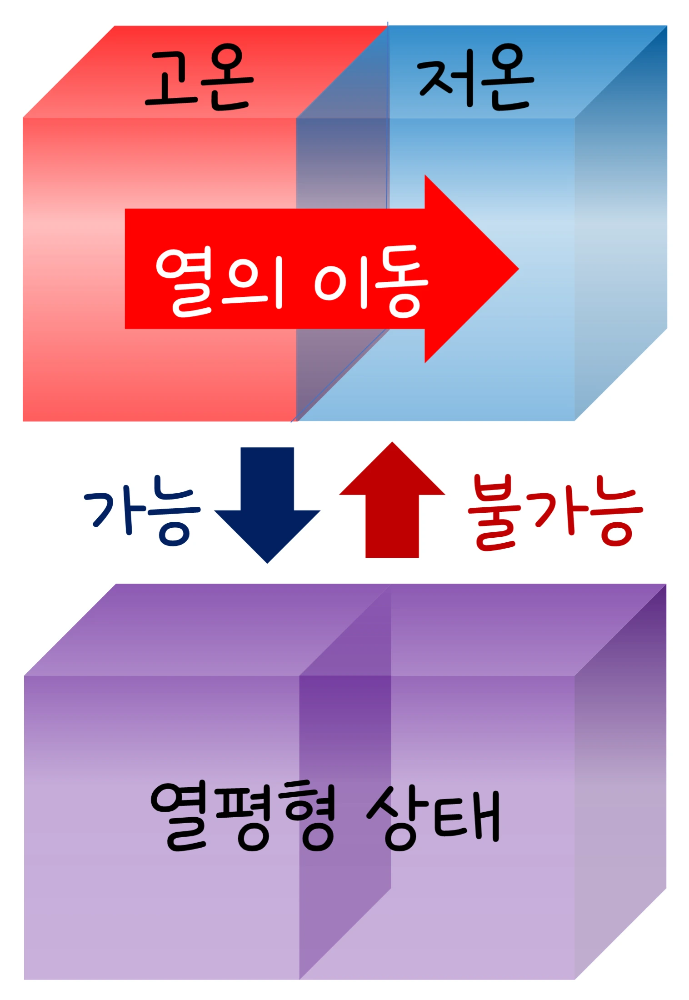

고3 물질과 에너지 · Ⅲ 화학 변화의 자발성 · 웹툰 10화 「저절로 차가워지는 팩」
실험에서 얼음 녹음·물 끓음·메테인 연소·암모니아 합성·CaCO₃ 분해의 ΔH·ΔS로 200~1 200 K에서 ΔG를 계산하고 ΔG–T 직선의 기울기와 전환 온도를 찾았습니다. 부호가 엇갈린 반응은 T = ΔH/ΔS에서 자발성이 뒤집혔고(얼음 273 K, 물 373 K, 암모니아 464 K, CaCO₃ 1 110 K), 메테인 연소는 모든 온도에서 자발적이었습니다. 엔트로피와 자발성을 정리합니다.
실험 데이터 되짚기
표준 열역학 자료(25 ℃ 값, 온도 무관 가정). ΔS 단위를 kJ로 맞춰 계산합니다.
| 반응 | ΔH (kJ) | ΔS (J/K) | 전환 온도 | ΔG at 298 K | ΔG at 800 K | 자발성 |
|---|---|---|---|---|---|---|
| 얼음 녹음 H₂O(s) → (l) | +6.01 | +22.0 | 273 K (0 ℃) | −0.55 (자발) | −11.6 | 0 ℃ 위에서만 |
| 물 끓음 H₂O(l) → (g) | +40.7 | +109 | 373 K (100 ℃) | +8.2 (비자발) | −46.5 | 100 ℃ 위에서만 |
| 메테인 연소 | −802 | −5.2 | (154 000 K) | −800 | −798 | 모든 온도 자발 |
| 암모니아 합성 N₂ + 3H₂ → 2NH₃ | −92 | −199 | 464 K (191 ℃) | −33 (자발) | +67 (비자발) | 저온에서만 |
| CaCO₃ 분해 → CaO + CO₂ | +178 | +161 | 1 110 K (837 ℃) | +130 (비자발) | +49 | 고온에서만 |
ΔG–T 그래프는 기울기 −ΔS의 직선. 기울기가 음(−)이면 ΔS > 0(온도가 오를수록 자발), 양(+)이면 ΔS < 0(온도가 오를수록 비자발). 메테인 연소는 ΔG ≪ 0이지만 점화 없이는 안 일어남 — 자발성은 속도가 아니라 방향.
외부에서 계속 에너지를 넣지 않아도 저절로 일어나는 변화가 자발적 변화 — 철이 녹슬고(발열), 향수가 퍼지고, 얼음이 상온에서 녹는(흡열) 것. 발열만 자발적인 게 아닙니다. 엔트로피는 입자들이 배치될 수 있는 경우의 수, 곧 무질서한 정도: 고체 < 액체 < 기체, 녹거나 섞이거나 기체 분자 수가 늘면 증가. 예측 게임 — 질산 암모늄이 물에 녹는 것은 흡열인데 저절로 녹을까? 뭉치 ‘안 녹는다, 에너지를 넣어야’, 제로 ‘얼음도 흡열인데 저절로 녹잖아, 결정이 이온으로 흩어지면 엔트로피가 크게 늘어’: 냉찜질 팩을 누르자 결정이 녹으며 차가워집니다. 자발성 판단: 발열 + 엔트로피 증가 → 항상 자발(연소); 흡열 + 엔트로피 크게 증가 → 고온에서 자발(얼음 녹음, NH₄NO₃ 용해); 발열 + 엔트로피 감소 → 저온에서 자발(물이 얾); 흡열 + 엔트로피 감소 → 절대 안 일어남. ‘에너지를 내놓고 싶은 마음과 흩어지고 싶은 마음의 줄다리기’.
교재 그림
저절로 일어나는 방향은 한쪽뿐

뜨거운 쪽에서 차가운 쪽으로 열이 옮겨 가 온도가 고르게 되는 것은 자발적 변화이고, 그 반대는 저절로 일어나지 않습니다. 에너지가 흩어지는 쪽(엔트로피가 커지는 쪽)이 자발적인 방향입니다.
그림으로 보기
에너지(ΔH)와 흩어짐(ΔS)의 네 가지 조합
ΔG = ΔH − TΔS. 두 부호가 같은 편(초록·빨강 칸)이면 온도와 상관없이 결론이 나고, 엇갈리면(주황 칸) 전환 온도 T = ΔH ÷ ΔS를 넘느냐로 결정됩니다.
두 요인을 하나로: ΔG = ΔH − TΔS가 음수면 자발적, 양수면 비자발적(역반응이 자발적), 0이면 평형. 부호가 엇갈리면 온도가 자발성을 결정하고 ΔG = 0이 되는 온도 T = ΔH/ΔS에서 뒤집힙니다. 얼음 녹음 +6.01 kJ, +22.0 J/K → 273 K; 물 끓음 +40.7, +109 → 373 K ✓. 암모니아 합성 −92 kJ, −199 J/K → 464 K 아래에서만 자발 — 저온이 유리하지만 속도 때문에 450 ℃ + 촉매 + 고압을 씁니다. CaCO₃ 분해 +178, +161 → 1 110 K 이상 — 석회 가마의 온도. 자발적이라는 것은 저절로 일어날 수 있는 방향이라는 뜻이지 빨리 일어난다는 뜻이 아닙니다: 다이아몬드 → 흑연은 자발적이지만 상온에서는 사실상 일어나지 않고, 철도 몇 달·몇 년 걸립니다 — 얼마나 빠른지는 반응 속도(11~14화)의 문제.
움직여 보기
온도를 올리면 ΔG = ΔH − TΔS는?
보라 직선의 기울기는 −ΔS입니다. 298 K와 800 K에 놓고 표 1의 ΔG와 맞춰 보세요. 직선이 0을 지나는 점(주황 점선)이 전환 온도 ΔH ÷ ΔS입니다. ΔH·ΔS는 온도와 무관하다고 보았습니다.
ΔH·ΔS가 온도와 무관하다고 보았습니다(표준 25 ℃ 값). 실제로는 온도에 따라 조금 변해 전환 온도가 몇 도~수십 도 달라질 수 있습니다. 표준 상태(1 bar, 1 M) 기준 ΔG°이고 실제 조건에서는 ΔG = ΔG° + RT·lnQ로 농도·압력이 자발성을 바꾸며, 자발적이어도 활성화 에너지가 크면 관찰 가능한 시간 안에 일어나지 않습니다. ATP 가수 분해(ΔG ≈ −30 kJ/mol)가 생체의 비자발적 반응(단백질 합성 등)을 짝지어 돌리고, 철이 녹스는 것(ΔG < 0)은 막을 수 없고 늦출 수만 있어 도금·페인트가 그 역할입니다.
얼음 273 K · 물 373 K · NH₃ 합성 464 K · CaCO₃ 1 110 K · 메테인 연소 항상 자발 · ATP −30 kJ/mol
“10라운드! 질산 암모늄이 물에 녹는 건 흡열이야. 그래도 저절로 녹을까? 난 ‘안 녹는다’. 흡열은 에너지를 넣어 줘야 하니까.” “얼음도 흡열인데 저절로 녹잖아. 고체 결정이 이온으로 흩어지면 엔트로피가 크게 늘어나니까 저절로 녹을 거야!”
웹툰 10화 · 팩을 누르자 결정이 녹으며 차가워진다 — 제로 6 : 4 뭉치
“화학 변화가 저절로 일어날지는 에너지(엔탈피)와 무질서도(엔트로피)를 함께 봐야 해. 같은 물이 0 ℃ 위에서는 녹고 아래에서는 어는 것처럼, 온도에 따라 어느 쪽이 이기는지가 달라지지.” “에너지를 내놓고 싶은 마음과 흩어지고 싶은 마음의 줄다리기구나.”
웹툰 10화 · 다이아몬드 → 흑연은 자발적이지만 상온에서는 사실상 일어나지 않을 만큼 느리다
T = 25 200 ÷ 129 = 195 K(−78 ℃) — 실제 승화 온도와 일치. 298 K: ΔG = 25.2 − 298 × 0.129 = −13.2 kJ → 자발적으로 승화합니다.
T_전환 = 198 000 ÷ 187 = 1 059 K. 723 K < 1 059 K이므로 ΔG = −198 + 723 × 0.187 = −63 kJ, 자발. 더 낮은 온도면 ΔG는 더 음수지만 속도가 느려 450 ℃ + V₂O₅ 촉매로 절충합니다.